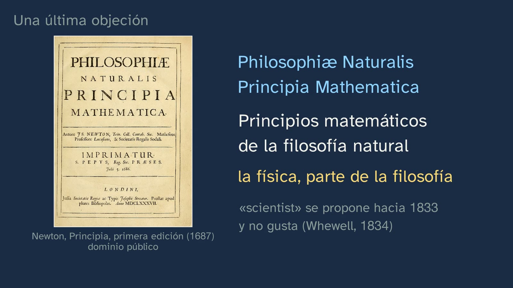

What use is knowledge that makes nothing?
In a nutshell
The class opens the topic with the question most often put to philosophy, in the form it takes today: if a machine answers almost anything for you in two seconds, what is the use of a kind of knowledge that makes nothing? It does not define philosophy: it does it, and then looks at what it has done. It starts from two stories about Thales of Miletus, the well and the olive presses, and examines them as sources: who tells them, when, and what for? The heart of the class is the chain of "what-fors": everything that is useful is useful for something else, and the chain has to end in something worth having for its own sake (Aristotle). From there come the four features of philosophical knowledge (critical, radical, rational and comprehensive), its origin in wonder, the difference between having an opinion and defending a position, and the class's key sentence: it's not about being right, but about giving reasons. Every quotation comes with its work and its exact place, and the class takes apart two that circulate wrongly: that Pythagoras invented the word "philosophy" (a legend) and that Socrates said "I know only that I know nothing" (it is not in Plato).
Objective. By the end, students will be able to explain, with an example, the four features of philosophical knowledge (critical, radical, rational and comprehensive), and why a kind of knowledge that makes nothing can deal with what matters most: what we do everything else for. And, faced with a story or a quotation, they will know to ask who tells it and where it comes from.
For readers outside Spain: the Bachillerato is the last two years of secondary school (ages 16–18); Philosophy is compulsory in the first year for every track, and History of Philosophy in the second. The video is in Spanish, with English subtitles; the images on this sheet come from the video and keep their Spanish text. The quotations are our own translations from the Greek and Latin originals.
Curriculum
Spain's Royal Decree 243/2022, Philosophy (consolidated text in the Official State Gazette, BOE, checked on 28/09/2026). Our translation of the official Spanish text. All the core knowledge comes from block A, "Philosophy and the human being", section 1, "Philosophical reflection on philosophy itself".
| Element | What the decree says | Where the class works on it |
|---|---|---|
| Core knowledge (block A.1) | "Features and conceptions of philosophical knowledge." | The four features, wonder, and the philosopher as the one who seeks (Diotima, in the Symposium) |
| Core knowledge (block A.1) | "The relevance and usefulness of philosophy: the importance of philosophising about the challenges of the 21st century." | The class's question, Thales's olive presses, the chain of what-fors and the open question about artificial intelligence |
| Core knowledge (block A.1) | "The philosopher's basic methods and tools: the use and critical analysis of sources; […]" | Who tells the story of Thales, when and what for? Pythagoras, as a legend. Where does "I know only that I know nothing" come from? |
| Core knowledge (block A.1) | From the same item: "[…] argumentative thinking and dialogue; […]" | The chain of what-fors as an argument; opinion and position |
| Specific competence 1 | "To identify problems and ask questions about the foundation, value and meaning of reality and human existence, through the analysis and interpretation of texts and other forms of philosophical and cultural expression, in order to recognise how radical and far-reaching these questions are, and the need to face them in order to lead a reflective and self-aware life." | From a phone to what gives meaning to a whole life |
| Specific competence 2 | "To search for, manage, interpret, produce and correctly convey information on philosophical questions through the contrasted and safe use of sources, their rigorous use and analysis, and the use of basic research and communication procedures, in order to develop an inquiring, autonomous, rigorous and creative attitude in philosophical reflection." | The stories of Thales and the quotations, examined as sources |
| Specific competence 3 | "To use and assess arguments and argumentative structures properly, through both formal and informal analysis, in order to produce and appreciate different kinds of discourse rigorously, and to avoid dogmatic, fallacious and biased ways of holding opinions and hypotheses." | The argument of the chain and the typical mistake: what each opinion costs |
| Criterion 1.1 | "To recognise how radical and far-reaching philosophical problems are by identifying, analysing and reformulating them in texts and other means of expression, whether philosophical, literary, historical, scientific, artistic or from any other cultural field." | "What is it for?" is reformulated as "what does being useful mean?" |
| Criterion 2.1 | "To show practical knowledge of the basic procedures of philosophical research through tasks such as identifying reliable sources, searching for information efficiently and safely, and correctly organising, analysing, interpreting, evaluating, producing and communicating it, both digitally and by more traditional means." | The class's first tool, and exercise 4: tracking down a quotation |
| Criterion 3.3 | "To recognise the importance of cooperation, commitment to truth, respect for plurality and the rejection of any discriminatory or arbitrary attitude, applying these principles to argumentative practice and to dialogue with others." | People deserve the same respect; opinions do not have the same support; and being willing to change your mind |
What students bring from lower secondary (ESO): almost nothing, and it is worth knowing. Spain's national decree for lower secondary (Royal Decree 217/2022) has no subject called Philosophy. The closest is Education in Civic and Ethical Values, which every student takes in a single year of the stage (35 hours in the national minimum timetable), and which includes "critical and philosophical thinking", "the virtues of dialogue and the rules of argument" and "the challenge of artificial intelligence". Some regions offer Philosophy as an elective in the fourth year (Madrid, for example), so many students start here from scratch. The only thing taken for granted is reading an argumentative text and telling an opinion from a fact.
How the class is built
Video chapters
About thirteen minutes, in ten chapters. It follows the channel's learning principles (in Spanish) and what the decree asks of this subject: its teaching and learning "should not consist of a mere programmatic presentation of topics and issues, but rather of generating a real experience of discovering philosophical questions" (introduction to the subject). That is why the class philosophises first and names what it did afterwards.
| Chapter | What happens | Why this way |
|---|---|---|
| What we'll see | Javier says hello and introduces the topic on the map of its seven classes; two are ideas labs (the speech bubbles). | Knowing where you are and where you're going organises what you learn. |
| The question | The hook: a machine answers almost anything in two seconds. Thales, around 600 BC, and the story of the well, which Plato records as something already told in his own day (Theaetetus 174a–b). Was the servant girl who mocked him right? | A question from today and an old story that makes it felt. The answer is left hanging until the end. |
| What you already know | What does "philosophy" mean? Love of wisdom. That Pythagoras invented the word is told as a legend: it first appears in Heraclides of Pontus, a student of Plato, a century and a half later and inside a dialogue. The idea is in Plato: in the Symposium (204a), Diotima explains that no god philosophises, because a god is already wise. | Retrieving what students know while separating what is told from what we know. |
| Thales and the olives | The reproach "philosophy is useless" is already in Aristotle (Politics I 11, 1259a). The prediction: Thales foresees a great harvest and has little money; how would you get rich? Pause. The presses of Miletus and Chios, reserved cheaply and hired out at whatever price he wanted. | Predicting before seeing: students commit to an answer before hearing Thales's. |
| How do we know? | Nothing written by Thales survives. Plato and Aristotle tell the two stories more than two centuries later, as something "people say", and each for a purpose: Plato, to portray the philosopher (and then he turns the mockery round, Theaetetus 175b–d); Aristotle, to explain monopoly. | The channel's question, applied to philosophy's own stories: the decree's critical analysis of sources. |
| The chain of what-for | What does "being useful" mean? The phone, friends, meeting up, having a good time… Can it go on forever? Pause. Aristotle: desire would be "empty and vain" (Nicomachean Ethics I 2). What is worth most is not useful for anything: it is what everything else is useful for. His highest knowledge, he says, "is not productive", is "the only free science" and, although all the others are more necessary, "none is better" (Metaphysics I 2). Two warnings: "free" is opposed to "slave", and Aristotle defended slavery; and not everyone believes philosophy is useful. Javier, to camera: the key point so far. | Intuition first, with an everyday object; then the text. The warnings come in the same class: neither is the great author spared criticism nor is the usefulness of philosophy taken as settled. |
| What philosophy does | Not what we said, but how we did it: the four features, each drawn from a step of the class. Wonder (Theaetetus 155d; Metaphysics I 2, 982b). Socrates and the unexamined life (Apology 38a). And "I know only that I know nothing", which is not in Plato: the closest wording is Cicero's (Academica I 16). | The features are recognised in what students have just done, not memorised. The false quotation, taken apart, is a tool for digital life. |
| Are all opinions equal? | The typical mistake, with what is true in it. An argument does not force you to think anything: it shows you what each opinion costs. An opinion is something you have; a position is something you defend. | The mistake, raised respectfully and taken apart by reasoning. The class's key sentence is repeated, saying that it is being repeated. |
| Doesn't philosophy make progress? | The title page of Newton's Principia (1687): "mathematical principles of natural philosophy". The word scientist, proposed around 1833, was not well received (Whewell, 1834). Russell (1912): what gets solved leaves under another name. | A serious objection, answered with documents and with its "partly". |
| Practice and keep thinking | Recap (was the servant girl right? Partly), four exercises, the open question about AI and the announcement of class 2, the first ideas lab. | Spaced practice: the solutions open the next class. The open question is also in the video's comments. |

A plan for a 50-minute lesson
| Minutes | What to do |
|---|---|
| 0–5 | No video: the hook question, in writing and in one sentence. If a machine answers almost anything for you, what is the use of knowledge that makes nothing? Keep it for the end (it is on the worksheet). |
| 5–13 | Video from 0:00 to 4:47, up to "can it go on forever?". Pause at 1:26 ("Was the servant girl right?") and at 2:55 ("How would you use it to get rich?"), and give a minute to answer in pairs. |
| 13–25 | The activity, part one: the chain of what-fors, in pairs, before hearing Aristotle. |
| 25–34 | Video from 4:47 to 9:14: Aristotle, the two warnings, the four features, Socrates and the quotation. Each pair compares its chain with what Aristotle says. |
| 34–44 | The activity, part two: a short debate with the class's rule. |
| 44–50 | Video from 9:14 to the end (13:14). The chapter "Are all opinions equal?" comes after the debate on purpose: it names what they have just done. Reread the sentence from the start: would you change it? The exercises, for homework with the worksheet. |
Typical mistakes and how they are handled
These are common confusions the design anticipates; as far as we know, there is no body of research on them as solid as there is for the sciences.
- "In philosophy everyone has their own opinion, and they are all equally valid." The class tackles it head-on (9:14). There is some truth in it: there is disagreement, and nobody can force anyone to think as they do. But not every answer will do: whoever holds that the chain of what-fors goes on forever has to accept what follows, that nothing we do would make sense. An argument does not force you to think anything: it shows you what each opinion costs. An opinion is something you have; a position is something you defend, with reasons, answering objections and changing it if someone else has better reasons. It is worth keeping the two halves of the class's sentence apart ("everyone deserves the same respect, but not every opinion has the same support"), because "your opinion is not worth the same" is easily heard as "you are not worth the same".
- "Philosophy is useless", and its variant, "philosophy makes no progress". The first was already thrown at Thales: Aristotle records it in the Politics (I 11, 1259a9–10), written between 335 and 322 BC. The class does not refute it in one blow: it shows that "being useful" is not so simple (the chain) and warns that not everyone believes philosophy is useful; the best arguments against it are heard in class 7. Russell explains the second partly, and says so himself: as soon as definite knowledge about a subject becomes possible, it ceases to be called philosophy (The Problems of Philosophy, 1912, ch. XV, p. 240). He adds straight away that this is "only a part of the truth": some questions may never have a definite answer.
- Taking stories and quotations at face value. That Pythagoras invented the word "philosophy" is a legend: it first appears in Heraclides of Pontus, in a dialogue rather than a work of history, and the idea it attributes to him is Platonic (Huffman, in the Stanford Encyclopedia of Philosophy, following Burkert, 1960). Both authors tell the stories of Thales's well and presses as something "people say". And "I know only that I know nothing" is not in Plato: his Socrates says that what he does not know, he does not think he knows either (Apology 21d), and in another passage he firmly claims to know something: that doing wrong is bad and shameful (Apology 29b). The closest wording is Cicero's (Academica I 16), more than three centuries later.
- "Aristotle says philosophy is useless." He does not. He says the knowledge he values most "is not productive" (Metaphysics I 2, 982b11), that it is "the only free science, since it alone exists for its own sake" (982b24–28) and that "all the others are more necessary than it, but none is better" (983a10–11): less necessary, not useless. And he is speaking of "this science", the science of first causes, not of today's school subject. The image of the free man presupposes slavery, which Aristotle defended: the video says so, and class 6 comes back to it.
- "Critical", "radical" and "wonder" in their everyday sense. In everyday Spanish, as in English, "critical" often means speaking badly of something and "radical" means extreme. In the class, being critical means not accepting something because many people say it or because it has always been said, and radical comes from "root": looking for the foundations. And wonder is not admiring something beautiful, but getting stuck on something that does not fit: in the Theaetetus, just before the sentence about wonder, Theaetetus admits that sometimes, when he really looks at those puzzles, he feels dizzy (155c). Worth checking in the answers to exercise 2.
- "A machine that answers already thinks", or "with AI there is no need to think any more". These are two quick answers to an open question, and the class does not give its own: it leaves it for further thought and comes back to it in class 7. What it does say is something else: a machine can give you a thousand answers about what is worthwhile in life, but which one is yours, and whether those answers hold up, you have to think out for yourself.

Questions and solutions
Stop and think (in the video)
- Was the servant girl right? (1:26) The class leaves it hanging and closes it in the recap (11:37): partly. The philosopher may trip over what lies at his feet, but philosophy is about something else: what we want the things we make for, and what is worth having for its own sake. Plato himself turns the mockery round a little later (Theaetetus 175b–d): when the practical man is asked what justice is, he is the one who gets dizzy. The best answers say in what respect the servant girl is right and in what respect she is not.
- What does the word "philosophy" mean? It comes from Greek: phílos, love or friendship, and sophía, wisdom. Love of wisdom. If someone adds that Pythagoras invented it, the video answers straight away that this is a legend.
- Thales foresees a great olive harvest and has little money. How would you use it to get rich? (2:55) According to Aristotle, while it was still winter he put down deposits to reserve all the olive presses in Miletus and Chios, cheaply because nobody else was bidding for them; when the harvest came and everyone needed them at once, he hired them out at whatever price he wanted. It is a monopoly, and Aristotle calls it that. Answers that use the advance information to get hold of what everyone will need at the same time are heading the right way; with little money, buying olives or land brings little. If someone mentions "the first futures contract", it is an anachronism: the text speaks of deposits to hire presses.
- Can the chain of what-fors go on forever? (4:47) No, if what we do is to make sense. Aristotle put it like this: if we chose everything for the sake of something else, "it would go on to infinity, and desire would be empty and vain" (Nicomachean Ethics I 2, 1094a18–22). There has to be something we want for its own sake. For teachers: the text is conditional ("if, then, there is some end of our actions that we want for its own sake…") and admits a classic objection the class does not raise: from the fact that each chain ends somewhere, it does not follow that they all end in the same thing. Good material for the activity's debate.

From the student worksheet
- Before you start: what is the use of knowledge that makes nothing? There is no right answer: it is their starting point. They reread it at the end (see below).
- Who tells each story about Thales, when, and what for? Plato tells the well story in the Theaetetus (174a–b), written around 369 BC, to portray the philosopher who looks up high and trips over what is below; a little later he turns the mockery round (175b–d). Aristotle tells the story of the presses in the Politics (I 11, 1259a), written between 335 and 322 BC, to explain how a monopoly is made. Both present them as something "people say", more than two centuries after Thales, who lived around 600 BC and left nothing written that survives. (The video rounds it: "about two centuries later".)
- The four features: what did we do in the class for each one? Critical: we did not accept that philosophy is useless, even though everyone repeats it; we examined it. Radical: we asked what "being useful" means, which we all took for granted. Rational: we gave reasons that can be checked and rejected, neither "because I say so" nor "because Aristotle said so". Comprehensive: we started with a phone and ended up asking what gives meaning to a whole life.
- Your chain of what-fors. See practice exercise 1 and the activity.
- At the end of the class: would you change your first answer? Any answer that gives a reason is valid. It is worth rewarding those who say which reason made them change, or which objection they could now answer: changing your mind for a good reason is a success, not a defeat.

Practice (the solutions open class 2)
These are open questions: they have no single answer, but they do have better and worse answers. Here are the criteria and an example of a good answer.
- Make your own chain of what-fors, starting from something you do every day, until you reach something that is worth something in itself. Criteria: each link really answers the "what for?" of the previous one, that is, it gives an end and not a cause ("because I'm told to" answers a different question); the chain reaches something about which it no longer makes sense to ask "what for?", and the student says why; and it does not stop at something still useful for something else, such as money or passing, which are almost always wanted for something else. Example: "I set the alarm → to get to school on time → so as not to miss lessons → to learn and pass → so I can study what I like → to work at something I like → to live well. And living well, what for? The question sounds odd: it is worth having for its own sake." Extra credit for anyone who finds two different endings (understanding something and being with their people, for example): that is the objection that not all chains need end in the same thing.
- Look outside this class, in a news story or a conversation, for an example of each feature of philosophy. Criteria: all four, each correctly identified and with its reason. Critical: someone does not accept something just because many people say it or because it has always been done (not "someone spoke badly of something"). Radical: someone asks what something everyone takes for granted means: what being free is, what is fair, what a friend is. Rational: someone gives reasons that can be checked and answers objections, instead of "because I say so" or "because someone famous said so". Comprehensive: someone brings together what others treat separately, like a news story about artificial intelligence that makes you think at once about technology, the law and what is fair. Example: "In an argument about homework, someone said: 'before deciding whether to set it, what does learning mean?'. That is radical: it went to what everyone took for granted."
- What's the difference between having an opinion and defending a position? The video's answer: an opinion is something you have; a philosophical position is something you defend, with reasons, answering objections and changing it if someone else has better reasons. And the class adds that everyone deserves the same respect, but not every opinion has the same support. Criteria: the three marks of a position (reasons, objections and willingness to change); not confusing respect for the person with the worth of their opinion; and an example of their own. Example: "'I think X' is an opinion. 'I hold X because of A and B; to anyone who objects C, I answer D; and if you showed me E, I would change my mind' is a position."
- Find a famous saying attributed to a philosopher, one of those going around the internet, and find out whether they really said it, and where. Criteria: the saying, copied exactly, and where it circulates; the work and the place where it should be, or the attempt to find them; a verdict (it is there word for word; it is there but says something else; it is not there; or it cannot be known); and the sources consulted. Example, with a distorted version that serves as a model: "I come across 'Philosophy is the most useless of the sciences, but the best', attributed to Aristotle. In the Metaphysics (book I, ch. 2, 983a10–11) he says that 'all the others are more necessary than it, but none is better'. Verdict: it is there but says something else: it speaks of 'necessary', not 'useful', and it refers to the science of first causes." More checked cases, for anyone who cannot find their own, in the activity.

Keep thinking. This class was written by an artificial intelligence and reviewed by a person. Can a machine philosophise, or only answer? And how would we know? It has no textbook answer, and neither the video nor this sheet gives its own. Some pointers to guide the debate without closing it:
- Separate the two questions. One is what philosophising would be: is it enough to give answers that look like arguments, or does it take wonder, examining what one takes for granted, being willing to change one's mind, caring about the question? The other is how we would know: from what it says, from how it comes to say it, from what goes on inside it? And, while we are at it, how do we know that another person philosophises?
- Use the four features as criteria. What would count as evidence that a machine is critical, radical, rational and comprehensive? And that it is not?
- The positions, each with its best argument. Some think that if something argues like a person, there is no reason to deny that it thinks; some think that answering is not understanding; and some believe the question cannot be answered until we say what thinking is. The teacher moderates and does not give a verdict.
- A fact, not an opinion: this class was written by an AI and reviewed by a person, who decided what was published. Which part of the work was whose?
The question comes back in class 7 ("Is philosophy any use in the age of AI?") and in block B.2 of the curriculum: "The mind-body problem. The philosophy of mind and the debate on artificial intelligence."
A classroom activity
The chain of what-fors, in pairs, and a debate with one rule (about 22 minutes in two parts, within the 50-minute plan; the second part with the whole group).
Materials: the student worksheet (its section for the chain) and some cards with starting points: "studying for the Bachillerato", "getting a good mark", "earning money", "doing sport", "having lots of followers", "coming to Philosophy class". Better not the phone from the video.
Part one, before hearing Aristotle (12 minutes; the video stops at 4:47).
- The chain (8 minutes; criterion 1.1). Each pair draws a card. One asks "and that, what for?" and the other answers; they swap roles at each link and write it on the worksheet. They stop when the question no longer makes sense or when the chain comes back to an earlier link. Before finishing, they decide: could it go on forever? Why?
- The endings, on the board (4 minutes). The teacher writes up only the last link of each pair. Do they coincide? If a chain has stopped at money or at passing, send the question back: "and that, what for?".
Then the video from 4:47 to 9:14: each pair compares its answer with Aristotle's.
Part two, the debate (10 minutes; specific competence 3 and criterion 3.3).
- The thesis. One on the board, to choose from: "If something is useless, it is worthless"; "All our chains end in the same thing"; or, for a group that moves fast, "Only someone whose necessities are taken care of can devote themselves to knowledge that makes nothing" (Aristotle says that this knowledge began to be sought when almost all the necessities already existed, Metaphysics I 2, 982b22–24; and it is a way of coming back to the video's first warning: who did the work?).
- The class's rule: it's not about being right, but about giving reasons. In practice, three norms: before replying to someone, you restate their reason in your own words, and the person who gave it says whether that is it; you answer the reason, not the person; and changing your mind is allowed and said out loud: "I've changed because…". The teacher moderates and does not give a verdict.
- Wrap-up (2 minutes). Everyone writes two sentences: "My position is… because…" and "The best objection I heard was…".
For teachers: the objection that each chain may end in a different end (see the chain's "stop and think") is the best way to keep the debate from simply agreeing with Aristotle. And if the group asks whether Aristotle was right, the honest answer is the class's own: his argument shows what it costs to think the opposite, but it forces nobody.
Another option: tracking down a quotation (15 minutes, in pairs, with a computer or phone; it is exercise 4 done in class, and it works on criterion 2.1). Each pair gets a saying attributed to a philosopher and follows four steps: copy it exactly and say where it circulates; look for the work and the place where it should be; give a verdict (it is there word for word; it is there but says something else; it is not there; or it cannot be known); and ask who spreads it and why. Four cases checked in the original, with their solution:
- "I know only that I know nothing", by Socrates: it is not in Plato. His Socrates says that what he does not know, he does not think he knows either (Apology 21d); the closest wording is Cicero's (Academica I 16), more than three centuries later.
- "Philosophy is the most useless of the sciences, but the best", attributed to Aristotle (a distorted version, prepared for the activity): it is there but says something else. "All the others are more necessary than it, but none is better" (Metaphysics I 2, 983a10–11): "useless" is not in the text.
- "For Russell, the greatest value of philosophy is its uncertainty": it says something else. He writes that its value is to be sought "largely" in its uncertainty (The Problems of Philosophy, 1912, pp. 242–243), and two pages later places its chief value, "perhaps", elsewhere: in the greatness of what it contemplates and in freeing us from narrow and personal aims (p. 244).
- "Thales predicted the eclipse of 28 May 585 BC": Herodotus (I 74) says that Thales had announced the year, not the day; the day was worked out by modern astronomers. Whether he really predicted it, and how, is still debated.

Sources
- Royal Decree 243/2022, consolidated text (BOE, in Spanish): https://www.boe.es/buscar/act.php?id=BOE-A-2022-5521.
- Plato (Theaetetus 155c–d and 174a–175d, Apology 21d, 29b and 38a, Symposium 204a), Aristotle (Metaphysics I 2–3, Politics I 11, Nicomachean Ethics I 2), Diogenes Laertius (I 12) and Herodotus (I 74), in Greek (Perseus): https://scaife.perseus.org/.
- Cicero, Academica I 16 and Tusculan Disputations V 8–9 (The Latin Library): https://www.thelatinlibrary.com/cicero/acad.shtml and https://www.thelatinlibrary.com/cicero/tusc5.shtml.
- Pythagoras and the word "philosophy": C. Huffman, "Pythagoras", Stanford Encyclopedia of Philosophy, §4: https://plato.stanford.edu/entries/pythagoras/. Burkert, W. (1960). Platon oder Pythagoras? Zum Ursprung des Wortes "Philosophie". Hermes 88, 159–177.
- Russell, B. (1912). The Problems of Philosophy, ch. XV, pp. 237–250 (first edition, Internet Archive): https://archive.org/details/problemsofphilos00russuoft.
- Whewell, W. (1834). Review of On the Connexion of the Physical Sciences, by Mary Somerville. The Quarterly Review 51, where he tells how the word scientist was proposed and not well received (Internet Archive): https://archive.org/download/quarterlyreview47smitgoog/quarterlyreview47smitgoog_djvu.txt.
- The eclipse of Thales, state of the question: Querejeta, M. (2011). On the Eclipse of Thales, Cycles and Probabilities. Culture and Cosmos 15(1), 5–16: https://arxiv.org/abs/1307.2095.
- Public-domain or CC0 images (Wikimedia Commons): the fable of the astrologer who falls into a well, by Jan Punt (1759, Rijksmuseum): https://commons.wikimedia.org/wiki/File:Astroloog_valt_in_put_L%27Astrologue_qui_se_laisse_tomber_dans_un_puits._Fable_XXXV._(titel_op_object),_RP-P-OB-66.239.jpg; Thales, engraving by W. Meyer (1875): https://commons.wikimedia.org/wiki/File:Illustrerad_Verldshistoria_band_I_Ill_107.jpg; Aristotle, by F. Hayez (1811): https://commons.wikimedia.org/wiki/File:Francesco_Hayez_Aristotle.jpg; Socrates, engraving by P. Pontius after Rubens (1638): https://commons.wikimedia.org/wiki/File:Antieke_buste_van_Socrates_Socrates_Sophronisci_Filivs_Atheniesis_(titel_op_object),_RP-P-OB-16.423.jpg; The School of Athens, by Raphael: https://commons.wikimedia.org/wiki/File:The_School_of_Athens_by_Raffaello_Sanzio_da_Urbino.jpg; the title page of Newton's Principia (1687): https://commons.wikimedia.org/wiki/File:Prinicipia-title.png.
- Lower secondary (ESO): Royal Decree 217/2022, consolidated text (BOE, in Spanish): https://www.boe.es/buscar/act.php?id=BOE-A-2022-4975 (Education in Civic and Ethical Values, article 10 and annexes II and IV).
- The translations of the quotations are our own, literal and checked against the original.
,_RP-P-OB-66.239.jpg){kind=link}


,_RP-P-OB-16.423.jpg){kind=link}


About this class
GinCol Lab is a free science channel for curious minds. Javier is an illustrated character with a synthetic voice, designed by computer with Qwen3-TTS, that does not imitate any known person; the script and this sheet are written by an AI (Claude, by Anthropic) and reviewed by a person before publishing. Every quotation has been checked in its author's original text, and the artworks shown are real and in the public domain or CC0. This English version was translated by the same AI. If you spot a mistake, tell us: learning also means correcting.
This sheet is published under a Creative Commons Attribution 4.0 licence: you can copy it, adapt it and use it in your classroom, crediting GinCol Lab.
How to cite this sheet
GinCol Lab (2026). What use is knowledge that makes nothing? GinCol Lab teacher sheet: Philosophy · 1st year of Bachillerato · What is philosophy and what is it for? · Class 1 of 7. https://gincollab.github.io/aula/en/filosofia/t01-c1/. CC BY 4.0.
GinCol Lab teacher sheet · CC BY 4.0 · Source and errata